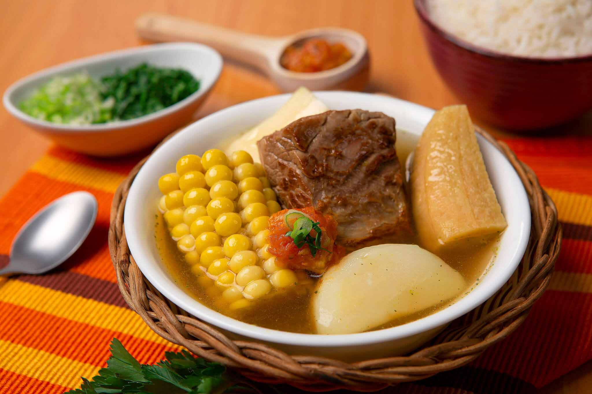

Sancocho de costilla

Descripción
El sancocho de costilla es uno de los platos típicos más reconocidos de Colombia. Es un caldo o sopa normalmente espeso a base de tubérculos como la papa, la yuca, el ñame, la arracacha y ahuyama.
Ingredientes
- 5 y 1/2 tazas de agua (1375 ml)
- 3 tallos de cebolla larga finamente picada incluyendo la parte verde (45 g)
- 1 libra de costilla de res magra (o falda, bola de res) cortada en 4 trozos (500 g)
- 2 sobres de CALDO CON COSTILLA MAGGI® DESMENUZADO (18 g)
- 1 rama de cilantro (10 g)
- 2 mazorcas tiernas pequeñas, partida cada una en 2 partes (300 g)
- 2 plátanos maduros
- 1 plátano verde pelado y cortado en 4 partes (230 g)
- 1/2 libra de yuca pelada, lavada y partidas en 4 trozos (250 g)
- 1/2 libra de papa pastusa pelada, lavada y partida en 4 trozos (250 g)
- 1 cucharada de aceite (14 g)
- 2 tomates rojos sin piel y finamente picados (240 g)
- 1 cucharada de cilantro finamente picado (solo las hojas) (10 g)
Preparación
-
Vierte 5 tazas de agua en una olla a presión a fuego medio, (reserva la media taza de agua restante). Adiciona un tallo de cebolla finamente picada, la carne, la rama de cilantro y el sobre y medio de CALDO CON COSTILLA MAGGI® DESMENUZADO (reserva el medio sobre restante).
-
Tapa la olla y cocina por 30 minutos o hasta que pite la primera vez.
-
Destapa la olla con cuidado, pasados los 30 minutos de cocción, agrega la mazorca, el plátano, la yuca y la papa, cocinar por 30 minutos más o hasta que todos los ingredientes estén blandos y el caldo espese un poco.
-
Calienta el aceite en una sartén a fuego medio durante 3 minutos. Añade los gajos de cebolla restantes finamente picados, el tomate, el cilantro, la media taza de agua reservada y el medio sobre de CALDO CON COSTILLA MAGGI® DESMENUZADO reservado y cocina por 5 minutos.
-
Sirve el sancocho en 4 platos en porciones iguales y encima pon el hogao.